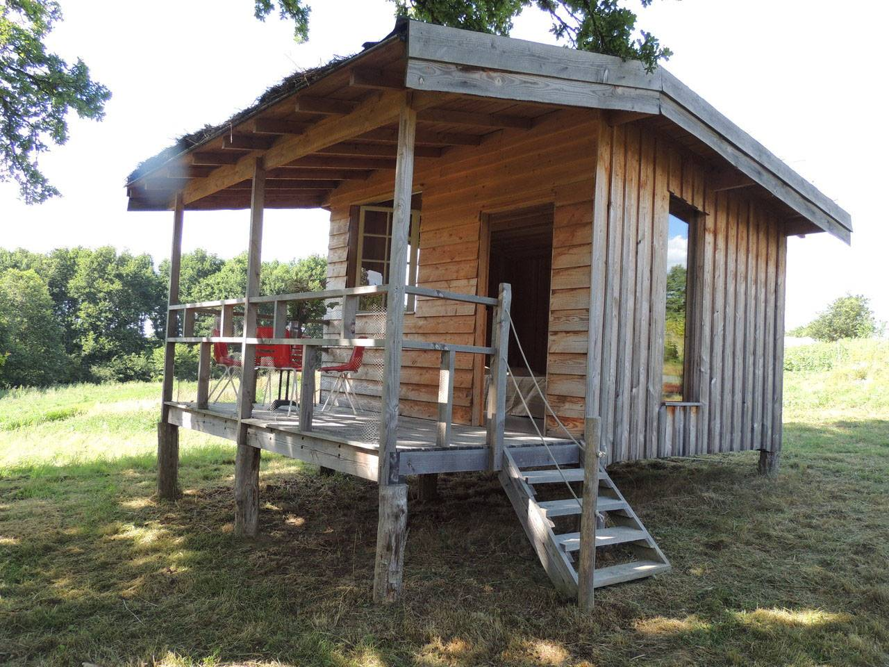
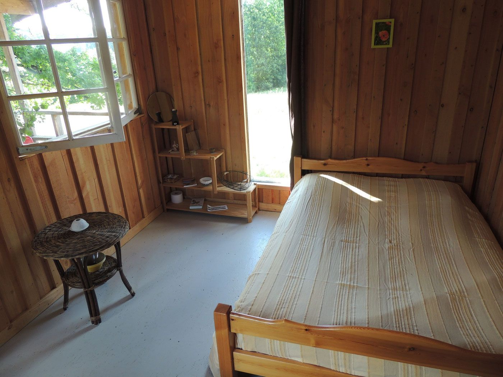
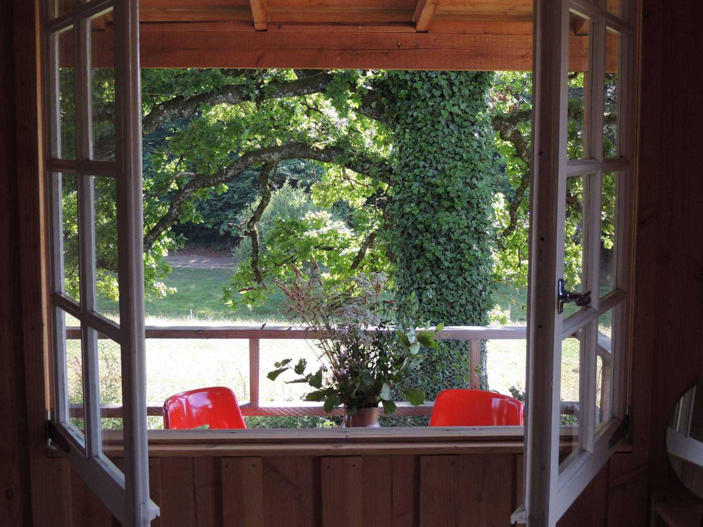

Disponible à partir du 1er mai 2026
La cabane à la ferme
Venez passer une nuit en pleine nature, dans une petite cabane à l'ombre d'un grand chêne, et profitez de notre petit déjeuner gourmand.
- 2 personnes, petit déjeuner compris55 € / nuit
- 2 personnes, sans petit déjeuner30 € / nuit
- 3 personnes, petit déjeuner compris60 € / nuit
- 3 personnes, sans petit déjeuner35 € / nuit

